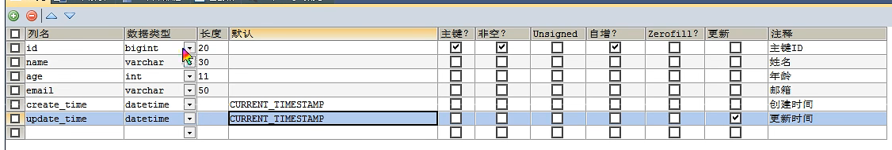

MybatisPlus教程
MybatisPuls
特性：
- 无侵入：只做增强不做改变，引入它不会对现有工程产生影响，如丝般顺滑
- 损耗小：启动即会自动注入基本 CURD，性能基本无损耗，直接面向对象操作
- 强大的 CRUD 操作：内置通用 Mapper、通用 Service，仅仅通过少量配置即可实现单表大部分 CRUD 操作，更有强 大的条件构造器，满足各类使用需求，简单的CRUD代码，可以自动生成
- 支持 Lambda 形式调用：通过 Lambda 表达式，方便的编写各类查询条件，无需再担心字段写错
- 支持主键自动生成：支持多达 4 种主键策略（内含分布式唯一 ID 生成器 - Sequence），可自由配置，完美解决主键问题
- 支持 ActiveRecord 模式：支持 ActiveRecord 形式调用，实体类只需继承 Model 类即可进行强大的 CRUD 操作
- 支持自定义全局通用操作：支持全局通用方法注入（ Write once, use anywhere ）
- 内置代码生成器：采用代码或者 Maven 插件可快速生成 Mapper 、 Model 、 Service 、 Controller 层代码，支持模板引擎，更有超多自定义配置等您来使用
- 内置分页插件：基于 MyBatis 物理分页，开发者无需关心具体操作，配置好插件之后，写分页等同于普通 List 查询
- 分页插件支持多种数据库：支持 MySQL、MariaDB、Oracle、DB2、H2、HSQL、SQLite、Postgre、SQLServer 等多种数据库
- 内置性能分析插件：可输出 SQL 语句以及其执行时间，建议开发测试时启用该功能，能快速揪出慢查询
- 内置全局拦截插件：提供全表 delete 、 update 操作智能分析阻断，也可自定义拦截规则，预防误操作
快速入门
- pojo
1 |
|
- mapper
1 | //注入到spring容器中，被spring容器托管 |
- 使用
1 |
|
注意
说明：
我们使用mybatis-puls可以节省大量的代码，不要同时带入mybatis和mybatis-puls
mybatis-puls可以自动拼接动态SQL，不在让动态SQL那么烦恼
如果application.yml没有与Mybatis-plus的相关配置的情况下mybatis-plus是默认按照实体类名去查询数据库表的
解决方法
第一种
就依它，把表名改成user第二种
把实体类表名按照驼峰命名法修改第三种
在application里配置一下数据库表前缀
配置日志
我们所有的SQL现在是不可见的，我们希望知道它是怎么执行的，所以我们必须要看日志！
1 | #日志配置 |
CRUD扩展
数据库插入对象时生成的id的默认值为：全局唯一的id
==主键生成策略==
- uuid
- 自增id
- 雪花算法
- zookeeper
Redis
雪花算法：
- snowflake是Twitter开源的分布式ID生成算法，结果是一个long型的id。其核心思想是：使用41bit作为毫秒数，10bit作为机器的ID（5bit是数据中心，5个bit的机器ID），12bit作为毫秒内的流水号（意味着每个节点在每毫秒可以参生4096个ID）最后还有一个符号位，永远为0
- @TableId(type= IdType. ID_WORKER)
- 主键自增：
- 实体类上个加入 @TableId(type= IdType.AUTO)
- 数据库字段一点要是自增
- 其余源码解释
1 | public enum IdType{ |
自动填充
创建时间、修改时间！这些操作一遍之后都是自动化完成的，我们不希望手动更新
阿里巴巴开发手册：所有的数据库表：gmt_create、gmt_modified几乎所有的表都要配置上！而且需要自动化!
方式一：数据库级别
1、在表中新增字段create_time、update_time (更新时间要把更新勾上)

方法二：代码级别
1、实体类字段属性上增加注解
@TableField()
1
2
3
4
5
6
7
8
9public enum FieldFill {
DEFAULT, //默认的
INSERT, //insert的时候会更新metaObjectHandle所配置的内容
UPDATE, //update的时候会更新
INSERT_UPDATE;//inser_update在insert和Update的时候会一起更新
private FieldFill() {
}
}
2、配置MetaObjectHandle处理器
1 | //开启日志功能 |
3.得出结果
1 |
|
乐观锁
==什么是乐观锁？==
故名思意十分乐观，它总是认为不会出现问题，无论干什么不去上锁！如果出现了问题，再次更新值测试
==什么是悲观锁？==
故名思意十分悲观，它总是认为会出现问题，无论干什么不去上锁！再去操作！
乐观锁的实现方式：
- 取出记录时，获取当前version
- 更新时，带上这个version
- 执行更新时， set version=newVersion where version=oldVersion
- 如果version不对，就更新失败
1 | # 乐观锁：1、先查询，获得版本号 version=1 |
- 测试乐观锁插件
- 数据库增加version字段
- pojo增加相应字段
1 | //添加@Version注解必须使用mybatis-puls的@version |
- 注册组件
1 |
|
- 测试乐观锁
1 |
|
查询操作
1 |
|
分页查询
1、原始的limit进行分页
2、pageHelper第三方插件
3、Myabis-Puls 内置了分页插件
- 配置拦截器组件
1 |
|
删除记录
- 与插入操作类似 都可以通过id，map，多个id批量删除。
逻辑删除
物理删除：从数据库中直接移除
逻辑删除：在数据库中没有移除，还存在在数据库中，而是通过一个变量来让他失效
管理员可以查看被删除的记录！防止数据的丢失，类似于回收站
- 增加删除字段
- pojo增加相应字段
1 |
|
- 注入到bean并配置相应文件(新版本的mybatis-puls不需要把ISqlInjector注入到spring容器中)
1 | mybatis-plus: |
- 测试结果
1 |
|
==性能分析插件==
平时的开发中，会遇到一些慢SQL。我们可以通过测试！druid等等来解决
Mybatis-Puls提供性能分析插件，如果超过这个时间就停止运行
- 添加插件
- 测试使用
条件构造器
wrapper：
我们写一些复杂的SQL 就可以使用他来替代。
QueryWrapper 查询条件器